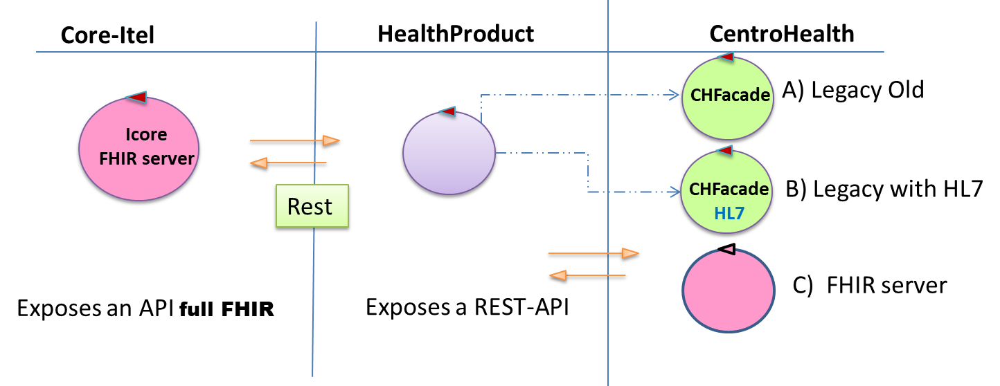
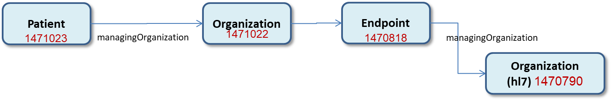
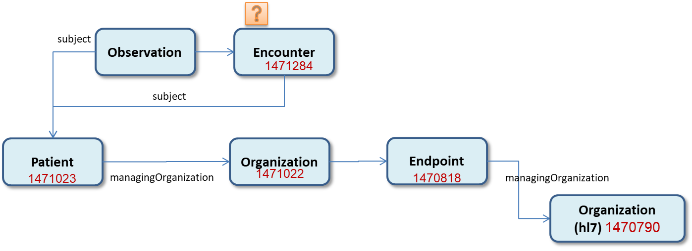
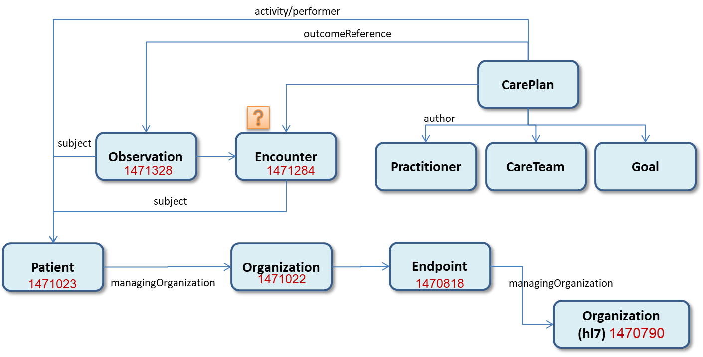

|  |
In questo lavoro ci occupiamo della interazione tra HealthProduct e un CentroHealth che fornisce un Utilizziamo il programma: HealthFhirpublicClient.java e gli esempi specifici ricopiati in FhirExamples/PatientExample |
|  | L'esempio patient-example.json include una Reference a
organization-example.json (managingOrganization) che a sua volta include una Reference a
endpoint-example.json che referenzia una
managingOrganization.
Pertanto, si e' procedutto come segue : Operazione |
|  |
Operazione RicercheOperazione |
|  |